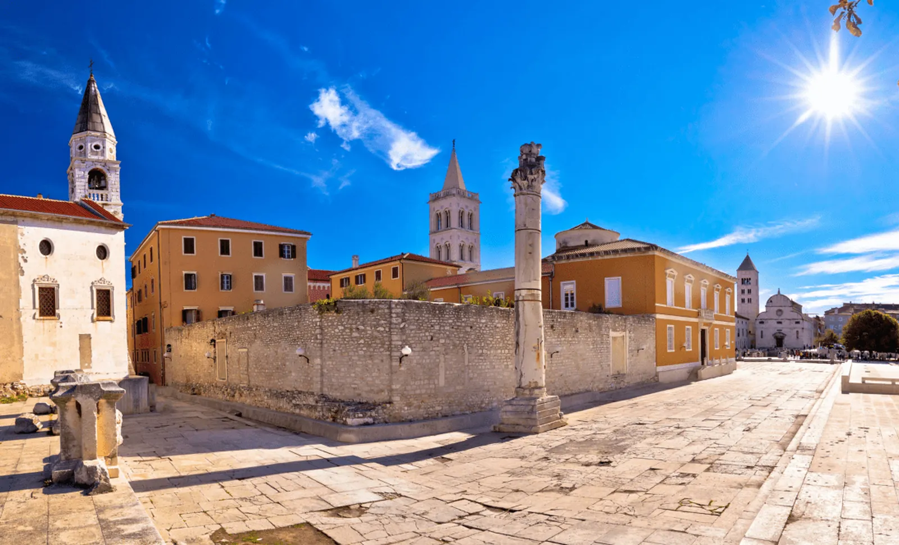
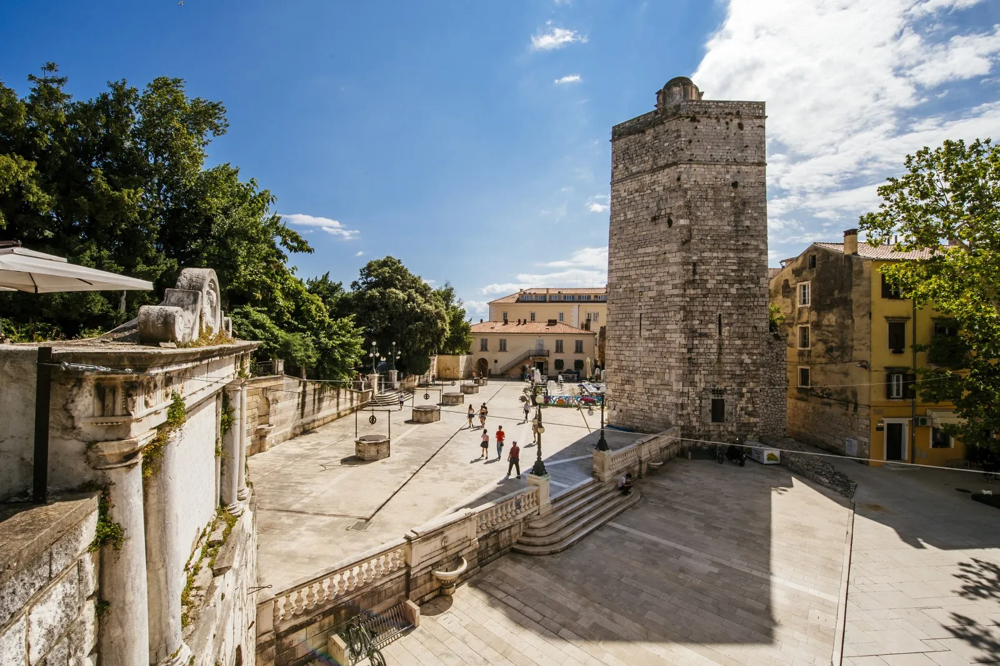

Prošlost Zadra seže tri tisuće godina unazad kada se spominje kao naselje, dok je urbanizirana sredina već dvije tisuće godina. Od tada je Zadar jedan od najvažnijih gradova na istočnom Jadranu i nezaobilazna destinacija pustolova, pjesnika i pisaca. Njegove ulice, trgovi, riva, crkve i spomenička baština otkrivaju tu drevnost na svakom koraku, dok su moderne instalacije vizija suvremenosti i inspiracija za nove putnike. Prije tri tisuće godina postavljeni su temelji i avantura je tada već bila počela.
Materijalni ostaci postojanja čovjeka i njegove kulture na području zadarske regije postoje još od starijeg kamenog doba. U sloju starom 15.000 godina na Dugom otoku pronađen je najstariji Dalmatinac nazvan Šime, potom i paleolitička Venera imena Lili. Na kopnu Zadra iz kasnijeg neolitika potječu naseobine u Puntamici i Arbanasima, čiji se suvremeni stanovnici i danas ponose svojom posebnošću.
Prije 2.700 godina Zadar je kao naselje Liburna već bio postao značajno središte, sidrište i luka za brojna trgovačka putovanja. Liburni su suvremenici Rasena (Etruščana) u Italiji i levantskih Feničana, a bili su jednako vješti u trgovini i pomorstvu poput tih najutjecajnijih civilizatora željeznog doba. Slavni pomorci Liburni postaju glavni graditelji buduće armade Rimskog Carstva (Naves Liburnae) koja kontrolira Sredozemlje. U zadarskom zaleđu na području Ravnih kotara još uvijek postoji impozantna megalitska Asseria.

Savezništvo s Rimom nije samo spasilo Liburne od gubitka teritorija na području sjeverne Dalmacije, koje je bilo ugroženo nadiranjem Grka i susjednih Dalmata, već je njihovom drevnom naselju Zadru dalo konačni pečat grada. Zadar se u razdoblju Carstva urbanizira, gradi, doživljava procvat i pomalo postaje ono što će ga obilježiti kroz cijelo povijesno razdoblje kasnije antike i srednjovjekovlja, odnosno sve do početka Prvoga svjetskog rata – središtem istočnog Jadrana. Zadarski Forum svjedok je tog vremena.
Veliki potres i uzastopne erupcije vulkana na Islandu u 6. stoljeću zauvijek su raskinuli veze Zadra s antičkom prošlošću, pa se tijekom ranog srednjovjekovlja grad postepeno mijenja i oporavlja. Zadar brzo postaje najznačajnija slobodna dalmatinska komuna i centar Dalmacije u Romejskom Carstvu (Bizant) sa snagom i razvijenošću poput Venecije. Ratnička elita Hrvata u to je vrijeme kontrolirala šire zadarsko zaleđe, potom gradove i u najvećem opsegu jadranske otoke, pa su karakteristike prostora ostale iste: visoka razvijenost urbanih područja, identična brodogradnja poput liburnske (Condura Croatica i Serilia Liburnica u susjednom povijesnom gradiću Ninu) i metropolitanski značaj Zadra. Krajem 14. stoljeća osniva se prvo sveučilište na tlu Hrvatske koje osnivaju Dominikanci.
Od 11. do 14. stoljeća zadarski su knezovi u neprekidnim ratovima s Mletačkom Republikom, koja na značajnu i moćnu trgovačku konkurenciju u svom susjedstvu nije gledala blagonaklono. Hrvatski kralj Petar Krešimir IV. sporazumno je 1069. godine grad Zadar i dalmatinske komune pripojio svojoj državi, no već od početka 12. stoljeća Zadar ulazi u sastav Ugarsko-hrvatskog kraljevstva. Titularno je još pripadao Napuljskom kraljevstvu i Svetom Rimskom Carstvu, sve dok 1409. godine nije zajedno s Dalmacijom prodan Mletačkoj Republici za 100 tisuća dukata. Kasnije razdoblje Zadra obilježeno je kontroliranim razvojem, a tijekom 16. i 17. stoljeća i s rastućom opasnošću od Osmanskog Carstva koje pomalo preuzima kontrolu nad zadarskim zaleđem. Izgradnjom novog sustava utvrda i zidina koji značajno mijenjaju izgled grada, Zadar uskoro postaje najveći grad-utvrda u Mletačkoj Republici, a njegovi su bedemi danas na UNESCO-ovoj listi svjetske baštine.

Padom Venecije krajem 18. stoljeća Zadar je pripojen Austriji, no već 1806. godine Zadar dolazi pod upravu Napoleonove Francuske. U svega sedam godina vlasti nad Zadrom i Dalmacijom u okviru francuskih Ilirskih pokrajina, Francuzi su pokušali značajno promijenili dotadašnju stvarnost i modernizirati regiju, pa je obnovljeno zadarsko sveučilište sa studijem medicine, kirurgije, farmacije, prava, graditeljstva i geodezije. Zadar je ujedno postao upravno središte u kojemu su pisane i tiskane prve novine na hrvatskom jeziku, Kraglski Dalmatin. Nakon pada Napoleona i opsade Zadra 1813., austrijska vojska ponovno ulazi u grad.
Druga austrijska vlast nad Zadrom potrajala je do 1918. godine i kraja Prvoga svjetskog rata, kada Zadar zadržava ulogu glavnog dalmatinskog grada, ovog puta Kraljevine Dalmacije. Zadar je i sjedište Dalmatinskog sabora i crkvene metropolije za cijelu Dalmaciju, pa se postupno naseljava brojnim činovnicima iz Italije, koja također pripada Austriji. 1816. s radom počinje prva gimnazija u Zadru, otvara se prvi javni perivoj (Perivoj kraljice Jelene Madijevke), osniva se Narodni muzej, dok je 1838. stavljen u upotrebu prvi moderni gradski vodovod. Zadar ubrzo postaje moderan europski grad s brojnim trgovima i javnim prostorima, luksuznim kavanama i hotelima, knjižnicama i čitaonicama, a imao je čak šest tiskara i preko 40 različitih novina i časopisa. U Zadru se proizvode 33 vrste likera, od kojih je svjetski najpoznatiji Maraschino. Posljednjeg dana 1894. godine u Zadru je zasjala električna gradska rasvjeta, prva sustavno provedena električna mreža u Hrvatskoj.
Austro-Ugarska Monarhija doživjela je slom 1918., pa je Zadar 1920. pripojen Italiji kao enklava na istočnoj obali Jadrana. Tek na kraju Drugoga svjetskog rata Zadar ponovno postaje dijelom Hrvatske, odnosno Jugoslavije. U jugoslavenskom periodu Zadar je potpuno obnovljen, jer je tijekom Drugoga svjetskog rata 1943. i 1944. pretrpio bombardiranja pri čemu je porušena gotovo cijela povijesna jezgra. Ovaj period karakterizira industrijalizacija grada i njegove okolice, osniva se Filozofski fakultet, a Zadar postaje moćni kulturni i gospodarski centar svoje regije. U Zadru nastaje veliko brodarsko poduzeće Tankerska plovidba, utemeljeno na gotovo tri tisuće godina dugoj tradiciji vrsnih brodograditelja, a istovremeno Zadar postaje i turističko središte. Najpoznatiji je po pionirskom doprinosu razvoju hrvatske i jugoslavenske košarke, koja sa Zadraninom Krešimirom Ćosićem u dresu reprezentacije postaje višestruki prvak svijeta, Europe i olimpijski pobjednik.
Od 1991. godine Zadar je u sastavu Republike Hrvatske koja je stvorena u Domovinskom ratu i procesu razdruživanja s Jugoslavijom. Zadar tada ponovno postaje centar regije koja nosi ime Zadarska županija, a tijekom 30-godišnjeg perioda grad se usmjerio na podizanje nove komunalne infrastrukture, izgradnju velike putničko-teretne luke u Gaženici u kojoj se sidre kruzeri, stvaranje Sveučilišta u Zadru, kao i prema industriji turizma. Zadar je također spojen s autocestom prema Zagrebu, a kako ima i zračnu luku, praktički je morem, cestom i zrakom povezan s cijelom Europom i svijetom. Zadar je danas studentski grad, dinamičan urbani centar u kojemu živi oko 70.000 stanovnika, dok oko 100.000 stanovnika iz drugih gradova, općina, mjesta i otoka Zadarske županije, u njemu vide inspirativni centar.
Nova je epoha iznjedrila i nove sportske junake, pa čak četiri zadarska nogometaša s kapetanom reprezentacije Lukom Modrićem nastupaju na Svjetskom prvenstvu u Rusiji kada Hrvatska postaje viceprvak svijeta.
Izvor: zadar.travel